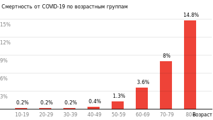

Коронавирус (COVID-19)
Руководство по обновлению
Материал собран Julie McMurry, MPH
Обновлено Mar 30, 2020 9:29 PM (UTC)Ю
Да, это опасно
Не поддавайтесь панике, но и не игнорируйте предупреждения Департамента здравоохранения о коронавирусе. Все сходятся во мнении, что несколько недель назад вирус еще можно было сдержать, но сейчас уже поздно. Китай дал нам фору, однако мы ею не воспользовались. Наступает фаза пандемии, за которой последуют сезонные рецидивы заболевания, до тех пор, пока (и если) не появится вакцина (которую в лучшем случае придется ждать от 18 до 24 месяцев).
Это не обычный грипп
Даже при самом удачном раскладе
Всемирная организация здравоохранения приводит средний показатель смертности в 3.5% среди всех возрастных групп. Кроме того, существуют убедительные доказательства в пользу того, что число бессимптомных случаев невелико. Практически все сходятся во мнении, что наиболее уязвимы люди в возрасте старше 60 лет, а также те, кто ослаблен другими заболеваниями.

В начале эпидемии была надежда на то, что показатель 3,5 % сильно преувеличен, однако по мере появления новых данных эта надежда исчезает. Цифры из Южной Кореи пока самые оптимистичные в мире (0,7 % случаев закончились смертельным исходом), но: а) население Южной Кореи в среднем моложе; б) Южная Корея все делает правильно с самых ранних стадий вспышки: в стране провели массовое тестирование, которое дало результат в сочетании с полной прозрачностью, всенародной поддержкой и использованием тестирования по системе drive-through (когда провериться можно не выходя из автомобиля). Если этот штамм коронавируса похож на другие вирусы, то агрессивные меры, мешающие его передаче, могут также снизить среднюю «дозу» вирусных частиц, вызывающих тот или иной конкретный случай. Это может снизить среднюю тяжесть заболевания и общую смертность, но результат покажет время.
Более того, даже если истинный уровень смертности COVID-19 составляет всего 1% (показатель среди пассажиров круизного лайнера Diamond Princess), это все равно в десять раз выше, чем у типичного сезонного гриппа.
У большинства людей инфекция проходит относительно легко, но сохраняет способность передаваться. Именно поэтому она и распространяется. В более серьезных случаях болезнь протекает намного острее. Уровень смертности не показывает общей картины. Минздрав Италии сообщает, что в 10 % случаев требуется не просто госпитализация, а пребывание в отделении реанимации и интенсивной терапии на протяжении 3-6 недель. Это приведет к перегруженности системы здравоохранения.
Сейчас самое главное — #СгладитьПик #ЗамедлитьЭпидемию
Было много спекуляций об «истинном» уровне смертности, однако мы все еще находимся на ранней стадии пандемии, и для точного определения этого показателя могут потребоваться годы. Тем не менее мы знаем, что это где-то между 0,5% и 4%. Этот диапазон — более чем достаточный аргумент в пользу принятия немедленных, решительных и широкомасштабных превентивных мер. Безусловно, самое важное, что нужно сделать, — сгладить пик эпидемии, чтобы мировые системы здравоохранения могли избежать перегрузки, и дать ученым время для поиска вакцины и методов лечения.

Он уже здесь
Скорее всего, вирус уже пришел в ваш город / поселок / на работу / в спортзал и т. д. Он почти наверняка рядом и просто еще не обнаружен из-за нехватки тестов.
В Италии подсчитали, что в начале вспышки число фактически инфицированных в четыре раза превышало число случаев, которые можно было подтвердить на тот момент. Во многих населенных пунктах инфекция начинает распространяться до официального обнаружения случаев.
В Сиэтлле неконтролируемая передача вируса происходила в течении нескольких недель до того, как она была замечена. Сиэтл и Стэнфорд проделали огромную работу для скорейшего создания своих собственных наборов для тестирования; приблизительно 5-7% тестов в Сиэтле оказались положительными, и любой человек (по направлению врача) может пройти тестирование.
Из-за недостаточного тестирования в Сиэттле в центре изучения простуды начали использовать самостоятельно разработанный тест, чтобы проверять на коронавирус анализы пациентов, у которых были синдромы, сходные с простудой, но при этом тест на простуду не дал результатов. В результате их работы, одобренной в исследовательских целях, был выявлен подросток из округа Снохомиш.
(Вашингтонский университет опубликовал эти результаты для целей здравоохранения). Пока что только Вашингтонский Университет и Стэнфорд продвинулись с собственными тестами; оба учреждения перевели студентов на удаленное обучение. Это говорит само за себя; другим университетам стоит последовать их примеру. При этом преподавателям необходима как техническая возможность, так и поддержка, чтобы справиться с переходом.
Образовательным учреждениям, лишенным необходимых средств (ноутбуков или интернета), такой переход будет тяжелее всего. Давайте начнем с тех университетов (и курсов), для которых этот переход будет менее сложен. Не существует волшебной палочки, магически решающей любые вопросы, но главное — скорость. Преподаватели! Пожалуйста, не ждите, пока администрация вашего университета примет решение. Переходите на удаленное преподавание самостоятельно. Вот краткий список советов для удаленного преподавания (на англ.).
Cистема здравоохранения
Российская система здравоохранения не подготовлена. Никто не подготовлен
Сравним возможности систем здравоохранения США и России. Американские больницы способны принять до 1 млн. больных. Этого недостаточно для того, чтобы разместить всех заболевших, так как ожидается около 4-8 миллионов. Университет Джона Хопкинса провел трехлетнее глобальное исследование готовности к пандемии. Даже являясь первой экономикой мира, США занимают только 42 место из 100 возможных . Даже у них недостаточно оборудования, персонала или систем взаимодействия. Что уж говорить о России. Ни у кого нет. Вот почему сегодня так важен личный выбор каждого из нас. Те из нас, кто знаком с системой здравоохранения севера Италии (район, пострадавший сильнее других), знают, что там работают великолепные врачи, инфекционисты и иммунологи. И эффективная система ухода за больными. Поэтому не стоит успокаивать себя тем, что это угроза только для развивающихся стран, которая не имеет отношения к ситуации в более благополучных странах.
Политика в сфере здравоохранения
В сравнении с другими странами, политика в сфере здравоохранения и охраны труда в США обеспечивает идеальные условия для пандемий
- Отсутствие гарантий всеобщего оплачиваемого отпуска по болезни
- Даже у тех, у кого есть оплачиваемый больничный, он часто измеряется днями, а не неделями, необходимыми в случае продолжительной болезни
- Отсутствие гарантий оплачиваемого отпуска в случае болезни родных, чтобы за ними ухаживать
- Отсутствие гарантий поддержки — как финансовой, так и по уходу — для тех, кто должен самостоятельно изолироваться. Из-за этого люди не самоизолируются, потому что им нужно что-то есть.
- У многих отсутствует страховка. Учитывая положение дел на настоящий момент (скрытая передача, отсутствие доступных вакцин), у страховых компаний есть лишь этические обязательства, но отсутствует финансовая заинтересованность в улучшенном тестировании и доступе к лечению.
Теперь абсолютно очевидно, что идея “оптимизировать” здравоохранение по принципу “сокращаем как можно больше” чревата катастрофой.
Международные взаимодействия
По всему миру врачи сражаются с эпидемией на передовых рубежах, и нехватка защитных средств приводит к тому, что они заболевают — после чего уже сами не могут получить необходимый уход. Вы можете узнать об этом из первых рук, прочитав эту историю, но она далеко не единственная; подобных рассказов становится все больше.
В глобальном плане авторитарные режимы плохо обеспечивают контроль над пандемией, поскольку при них снижаются компетентность СМИ и доступность информации, необходимые для наибольшей эффективности. Самые яркие примеры можно увидеть в Китае (ставшем первой жертвой), а сейчас в Иране. Статистически невероятно, что в Турции или России нет заболевших или такое малое их количество. Информация о количестве заболевших в некоторых странах доступна на их страницах посольств США, например Посольство России.
В настоящее время также работают сервисы с визуализаций данных и отслеживанием заболевания по всему миру, например, в Ресурсном центре коронавируса Джонса Хопкинса и New York Times
Надежда есть
Надежда есть. И надежда — это вы. Вот что нужно делать
Вы можете помочь — выполняя рекомендации ниже, насколько это возможно. Все довольно просто: чем раньше каждый из нас примет превентивные меры, тем больше жизней мы сможем спасти.
Те, кто вчера ничего не делал, сегодня могут удариться в панику. Не поддавайтесь этому и не теряйте надежды. Главное — сохранять спокойствие, методично делать все, что необходимо для подавления инфекции, и убеждать других последовать вашему примеру.
Совет от друзей из Пекина: «Дистанцируйтесь от страха и истерии, насколько возможно. Действуйте с умом, но пусть холодный рассудок не лишает вас способности заботиться об окружающих. Лучше быть щедрыми, чем запасаться сверх меры. В эти действительно тяжелые дни (особенно если вы начитались новостей) включите музыку и танцуйте! Радуйтесь тому хорошему, что есть в вашей жизни! Оно по-прежнему здесь, оно никуда не денется, и вы можете делиться им с другими».
Об авторaх
Об авторах подробнее можно почитать здесь
Аффилиация
Пожалуйста, обратите внимание, что заявленное здесь не говорится от имени какого-либо учреждения.
Мы делаем все, что в наших силах, чтобы включать только проверенную информацию и своевременно обновлять сайт. Пожалуйста, дайте нам знать, если вы видите проблемы с достоверностью или актуальностью данного краткого изложения; если вы являетесь вирусологом / специалистом в области общественного здравоохранения и т.д. и желаете внести свой вклад в эти материалы, пожалуйста, воспользуйтесь github.
Кого читать
На кого подписываться, если вам интересна пандемия с научной точки зрения
Настоящие герои — это те, кто находится в самой гуще событий, и чья работа упоминается выше. Цитирование их текстов не означает, что они прочитали или целиком одобрили это руководство. В тексте упоминаются лишь некоторые из них, за которыми автор этого сайта следит по разным причинам. Полный список людей, на кого подписана автор (связанных и не связанных этой темой), можно посмотреть здесь.